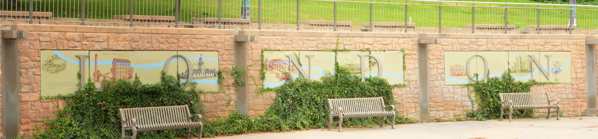
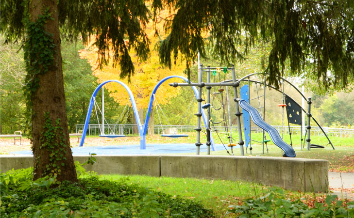

IVEY PARK
DOWNTOWN
Trails along the river
in the middle of the city
The perfect combination of nature, children's games, water features and trails to move around
Located in the center of London, just 2 blocks from Budweiser Gardens, is the Ivey Park, a large park where there are different spaces to share with the family along with a wonderful view of the Thames River.
Parent's Corners Parks List
Wide trails for exercising, biking, or walking
The Ivey Park is crossed by a large number of trails for you to practice different sports and activities, you can cross them with your children while walking, riding a bike or skateboards. It is in turn connected to a long path that runs along the entire length of the River Thames.
Children's playgrounds, a classic that every park must have
An essential of any park is that it has a playground for the little ones, this park is not the exception where young and old can have fun times, children being children and adults ... too.
